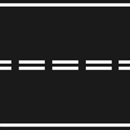
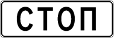

6. Сигналы светофора и регулировщика
изменения от 8 апреля 2020
6.1. В светофорах применяются световые сигналы зеленого, желтого, красного и бело-лунного цвета.
В зависимости от назначения сигналы светофора могут быть круглые, в виде стрелки (стрелок), силуэта пешехода или велосипеда и X-образные.
Светофоры с круглыми сигналами могут иметь одну или две дополнительные секции с сигналами в виде зеленой стрелки (стрелок), которые располагаются на уровне зеленого круглого сигнала.
6.2. Круглые сигналы светофора имеют следующие значения:
· ЗЕЛЕНЫЙ СИГНАЛ разрешает движение;
· ЗЕЛЕНЫЙ МИГАЮЩИЙ СИГНАЛ разрешает движение и информирует, что время его действия истекает и вскоре будет включен запрещающий сигнал (для информирования водителей о времени в секундах, остающемся до конца горения зеленого сигнала, могут применяться цифровые табло);
· ЖЕЛТЫЙ СИГНАЛ запрещает движение, кроме случаев, предусмотренных пунктом 6.14 Правил, и предупреждает о предстоящей смене сигналов;
· ЖЕЛТЫЙ МИГАЮЩИЙ СИГНАЛ разрешает движение и информирует о наличии нерегулируемого перекрестка или пешеходного перехода, предупреждает об опасности;
· КРАСНЫЙ СИГНАЛ, в том числе мигающий, запрещает движение.
Сочетание красного и желтого сигналов запрещает движение и информирует о предстоящем включении зеленого сигнала.
6.3. Сигналы светофора, выполненные в виде стрелок красного, желтого и зеленого цветов, имеют то же значение, что и круглые сигналы соответствующего цвета, но их действие распространяется только на направление (направления), указываемое стрелками. При этом стрелка, разрешающая поворот налево, разрешает и разворот, если это не запрещено соответствующим дорожным знаком.
Такое же значение имеет зеленая стрелка в дополнительной секции. Выключенный сигнал дополнительной секции или включенный световой сигнал красного цвета ее контура означает запрещение движения в направлении, регулируемом этой секцией.
6.4. Если на основной зеленый сигнал светофора нанесена черная контурная стрелка (стрелки), то она информирует водителей о наличии дополнительной секции светофора и указывает иные разрешенные направления движения, чем сигнал дополнительной секции.
6.5. Если сигнал светофора выполнен в виде силуэта пешехода и (или) велосипеда, то его действие распространяется только на пешеходов (велосипедистов). При этом зеленый сигнал разрешает, а красный запрещает движение пешеходов (велосипедистов).
Для регулирования движения велосипедистов может использоваться также светофор с круглыми сигналами уменьшенного размера, дополненный прямоугольной табличкой белого цвета размером 200 x 200 мм с изображением велосипеда черного цвета.
6.6. Для информирования слепых пешеходов о возможности пересечения проезжей части световые сигналы светофора могут быть дополнены звуковым сигналом.
6.7. Для регулирования движения транспортных средств по полосам проезжей части, в частности по тем, направление движения по которым может изменяться на противоположное, применяются реверсивные светофоры с красным X-образным сигналом и зеленым сигналом в виде стрелы, направленной вниз. Эти сигналы соответственно запрещают или разрешают движение по полосе, над которой они расположены.
Основные сигналы реверсивного светофора могут быть дополнены желтым сигналом в виде стрелы, наклоненной по диагонали вниз направо или налево, включение которой информирует о предстоящей смене сигнала и необходимости перестроиться на полосу, на которую указывает стрела.
При выключенных сигналах реверсивного светофора, который расположен над полосой, обозначенной с обеих сторон разметкой 1.9 , въезд на эту полосу запрещен.

Разметка 1.9
6.8. Для регулирования движения трамваев, а также других маршрутных транспортных средств, движущихся по выделенной для них полосе, могут применяться светофоры одноцветной сигнализации с четырьмя круглыми сигналами бело-лунного цвета, расположенными в виде буквы "Т". Движение разрешается только при включении одновременно нижнего сигнала и одного или нескольких верхних, из которых левый разрешает движение налево, средний - прямо, правый - направо. Если включены только три верхних сигнала, то движение запрещено.
6.9. Круглый бело-лунный мигающий сигнал, расположенный на железнодорожном переезде, разрешает движение транспортных средств через переезд. При выключенных мигающих бело-лунном и красном сигналах движение разрешается при отсутствии в пределах видимости приближающегося к переезду поезда (локомотива, дрезины).
6.10. Сигналы регулировщика имеют следующие значения:
РУКИ ВЫТЯНУТЫ В СТОРОНЫ ИЛИ ОПУЩЕНЫ:
· со стороны левого и правого бока разрешено движение трамваю прямо, безрельсовым транспортным средствам прямо и направо, пешеходам разрешено переходить проезжую часть;
· со стороны груди и спины движение всех транспортных средств и пешеходов запрещено.
ПРАВАЯ РУКА ВЫТЯНУТА ВПЕРЕД:
· со стороны левого бока разрешено движение трамваю налево, безрельсовым транспортным средствам во всех направлениях;
· со стороны груди всем транспортным средствам разрешено движение только направо;
· со стороны правого бока и спины движение всех транспортных средств запрещено;
· пешеходам разрешено переходить проезжую часть за спиной регулировщика.
РУКА ПОДНЯТА ВВЕРХ:
· движение всех транспортных средств и пешеходов запрещено во всех направлениях, кроме случаев, предусмотренных пунктом 6.14 Правил.
· Регулировщик может подавать жестами рук и другие сигналы, понятные водителям и пешеходам.
· Для лучшей видимости сигналов регулировщик может применять жезл или диск с красным сигналом (световозвращателем).
6.11. Требование об остановке транспортного средства подается с помощью громкоговорящего устройства или жестом руки, направленной на транспортное средство. Водитель должен остановиться в указанном ему месте.
6.12. Дополнительный сигнал свистком подается для привлечения внимания участников движения.
6.13. При запрещающем сигнале светофора (кроме реверсивного) или регулировщика водители должны остановиться перед стоп-линией (знаком 6.16 ), а при ее отсутствии:
· на перекрестке - перед пересекаемой проезжей частью (с учетом пункта 13.7 Правил), не создавая помех пешеходам;
· перед железнодорожным переездом - в соответствии с пунктом 15.4 Правил
· в других местах - перед светофором или регулировщиком, не создавая помех транспортным средствам и пешеходам, движение которых разрешено.
6.14. Водителям, которые при включении желтого сигнала или поднятии регулировщиком руки вверх не могут остановиться, не прибегая к экстренному торможению в местах, определяемых пунктом 6.13 Правил, разрешается дальнейшее движение.
Пешеходы, которые при подаче сигнала находились на проезжей части, должны освободить ее, а если это невозможно - остановиться на линии, разделяющей транспортные потоки противоположных направлений.

Знак 6.13
6.15. Водители и пешеходы должны выполнять требования сигналов и распоряжения регулировщика, даже если они противоречат сигналам светофора, требованиям дорожных знаков или разметки.
В случае если значения сигналов светофора противоречат требованиям дорожных знаков приоритета, водители должны руководствоваться сигналами светофора.
6.16. На железнодорожных переездах одновременно с красным мигающим сигналом светофора может подаваться звуковой сигнал, дополнительно информирующий участников движения о запрещении движения через переезд.